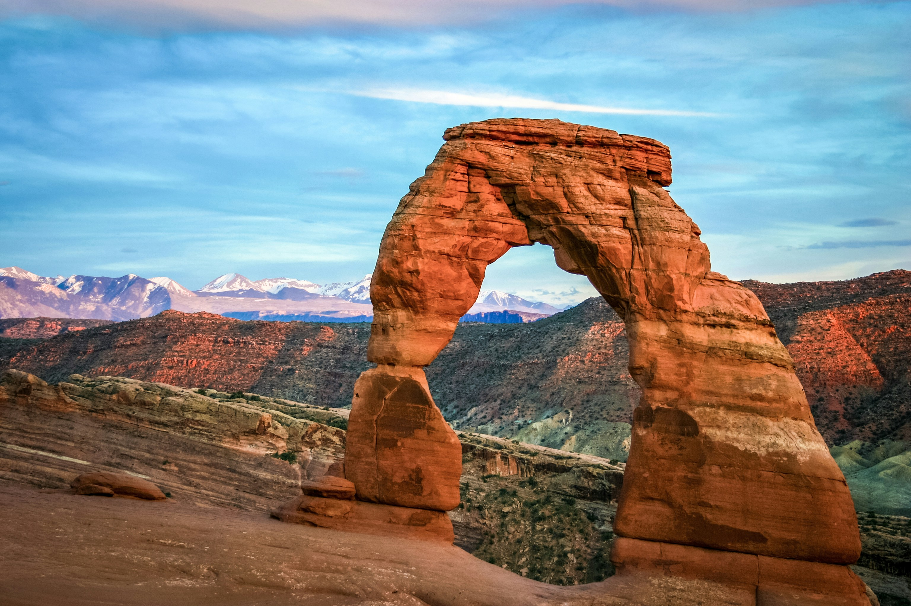

The State of Utah
 Utah, a state in the western United States, is a treasure trove of diverse natural landscapes. From the majestic Rocky Mountains to the awe-inspiring red rock formations of Arches National Park, each corner of Utah offers a unique and breathtaking experience. The state proudly hosts five national parks, lovingly called the' Mighty 5,' which draw in millions of visitors annually. Utah's thriving economy, driven by technology, mining, and tourism, is a testament to its appeal. The state's capital, Salt Lake City, is a cultural hub and the spiritual center of the Church of Jesus Christ of Latter-day Saints. Utah's fame extends beyond its natural beauty and cultural richness- it is also renowned for hosting the Sundance Film Festival, one of the largest independent film festivals in the United States.
| Park Name | Location | Established | Size | Popular Attractions |
|---|---|---|---|---|
| Zion National Park | Springdale, UT | 1919 | 146,597 acres | Angels Landing, The Narrows |
| Arches National Park | Moab, UT | 1971 | 76,679 acres | Delicate Arch, Landscape Arch |
| Bryce Canyon National Park | Bryce, UT | 1928 | 35,835 acres | The Hoodoos, Bryce Amphitheater |
| Canyonlands National Park | Moab, UT | 1964 | 337,598 acres | Island in the Sky, The Needles |
| Capitol Reef National Park | Torrey, UT | 1971 | 241,904 acres | Hickman Bridge, Capitol Gorge |